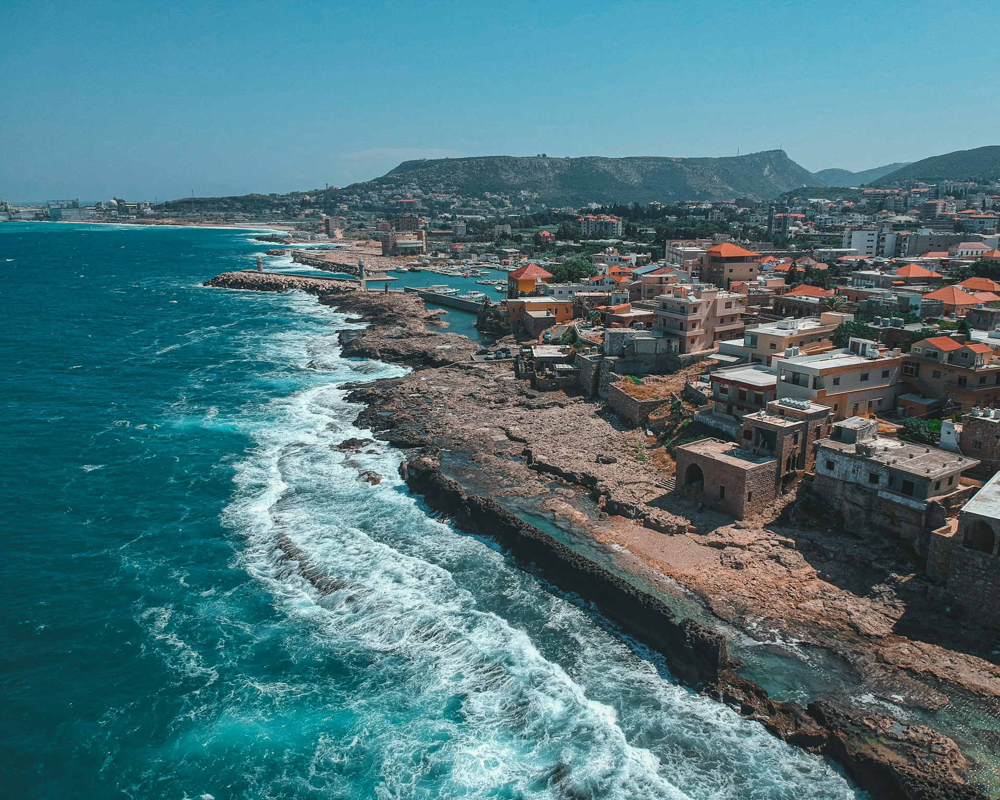
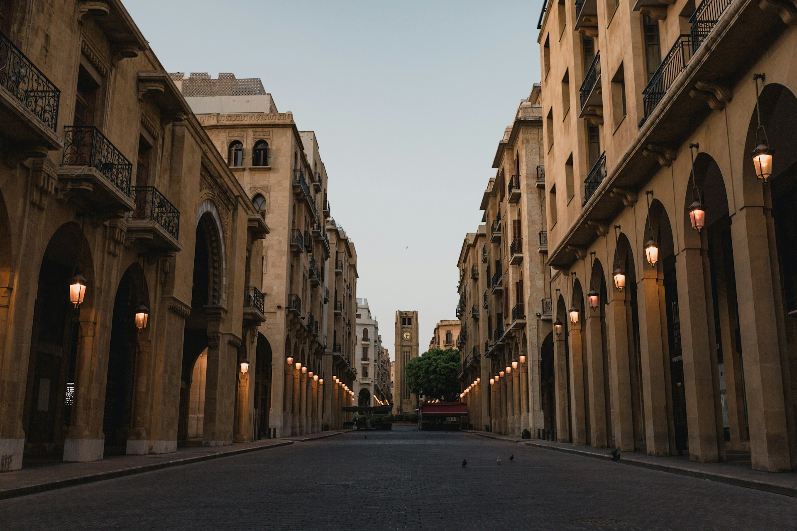
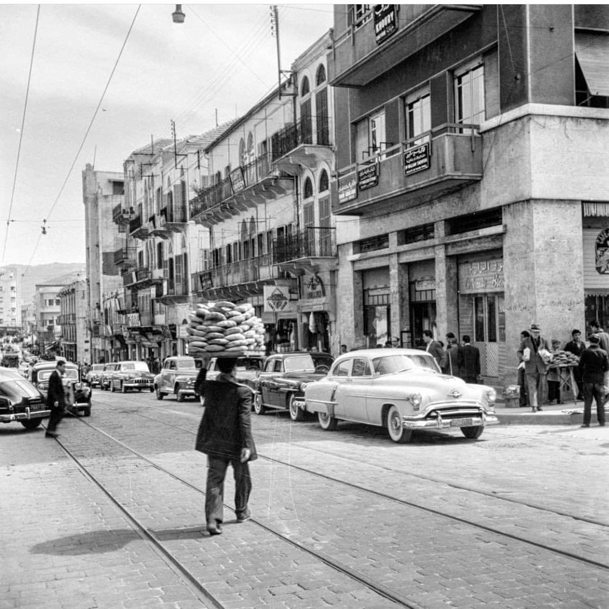
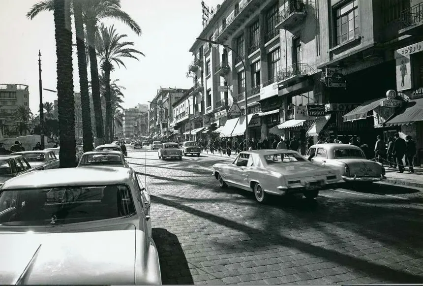

The Heart of The Mediterranean
The New Lebanon
Lebanon today is a country of resilience and creativity, rebuilding its identity amid challenges. Beirut remains a vibrant city, blending modern urban life with historic charm. Cafes, markets, and art spaces continue to attract locals and visitors alike, while small businesses and startups are driving innovation across the country. Despite economic and political difficulties, Lebanon’s natural beauty—from the Mediterranean coast to the mountain peaks—remains a source of pride and a draw for tourism and outdoor activities.


Culturally, Lebanon continues to be a center of artistic and intellectual energy. Musicians, filmmakers, writers, and visual artists are shaping a new generation of expression, while universities and cultural institutions nurture talent and dialogue. Festivals, exhibitions, and creative events showcase the country’s diversity and passion for the arts. Though the modern golden age of the past may have passed, today’s Lebanon carries forward a spirit of resilience, ingenuity, and cultural richness that keeps its identity alive and evolving.
Lebanon's Golden Age

From the 1950s to the early 1970s, Lebanon enjoyed a period of remarkable prosperity and vibrancy. Beirut became the financial and cultural hub of the Middle East, earning the nickname the “Switzerland of the East.” Luxury hotels, seaside resorts, and bustling streets drew tourists from across the region, while trade and entrepreneurship flourished. The mix of mountains, beaches, and historic sites made Lebanon a unique destination where leisure, business, and culture thrived side by side.
Culturally, Lebanon earned its title as the Paris of the Middle East. Cafes, theaters, and art galleries buzzed with creativity, while writers, poets, and musicians shaped a lively intellectual scene. Institutions like the American University of Beirut (AUB) educated generations of innovators, and cultural festivals filled the calendar year-round. Although this golden period ended with the civil war in 1975, its legacy of openness, cosmopolitanism, and cultural richness continues to define Lebanon’s identity today.
